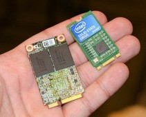
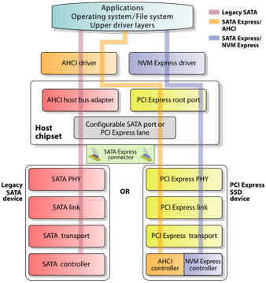
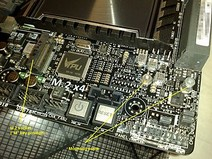
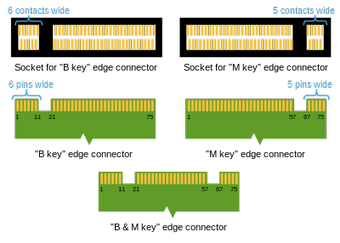

M.2
O M.2 , anteriormente conhecido como NGFF ( Next Generation Form Factor ), é uma especificação para placas de expansão de computador montadas internamente e conectores associados. Ele substitui o padrão mSATA , que usa o layout e os conectores do cartão físico PCI Express Mini Card . Um aspecto importante, mas sutil e confuso, da especificação M.2 é que ele pode executar um SSD sobre SATA (diferente de mSATA) ou PCIe. A diferença entre M.2 SATA e M.2 PCIe pode ser discernida por seus entalhes chaves. Os cartões SATA M.2 (que não devem ser confundidos com o mSATA, que possui duas chaves de conexão) possuem três entalhes de conector, enquanto os cartões PCIe M.2 têm apenas dois. A especificação física mais flexível do M.2 permite diferentes larguras e comprimentos de módulos e, juntamente com a disponibilidade de recursos de interface mais avançados, torna o M.2 mais adequado que o mSATA para aplicações de armazenamento de estado sólido em geral e particularmente para uso em pequenas dispositivos como ultrabooks ou tablets .
As interfaces de barramento de computador fornecidas pelo conector M.2 são PCI Express 3.0 (até quatro pistas ), Serial ATA 3.0 e USB 3.0 (uma porta lógica única para cada uma das duas últimas).
Cabe ao fabricante do host ou dispositivo M.2 selecionar quais
interfaces devem ser suportadas, dependendo do nível desejado de suporte
ao host e tipo de dispositivo. Os entalhes de digitação dos conectores dos dispositivos M.2 denotam várias finalidades e capacidades dos hosts e módulos M.2.
Os entalhes chaves exclusivos de cartões e dispositivos padrão M.2
também impedem que eles sejam inseridos em conectores host
incompatíveis.
Além de suportar o avançado AHCI ( Advanced Host Controller Interface ) no nível de interface lógica, a especificação M.2 também suporta NVM Express (NVMe) como a interface de dispositivo lógico para SSDs M.2 PCI Express. Enquanto o suporte para AHCI assegura compatibilidade retroativa em nível de software com dispositivos SATA legados e sistemas operacionais
legados, o NVM Express é totalmente projetado para utilizar a
capacidade de dispositivos de armazenamento PCI Express de alta
velocidade para executar muitas operações de E / S em paralelo.
Os barramentos expostos através do conector M.2 são PCI Express 3.0, Serial ATA (SATA) 3.0 e USB 3.0, que é compatível com USB 2.0. Como resultado, os módulos M.2 podem integrar várias funções, incluindo as seguintes classes de dispositivos: Wi-Fi , Bluetooth , navegação por satélite , comunicação de campo próximo (NFC), rádio digital , WiGig , WAN sem fio (WWAN) e estado sólido. drives (SSDs). A especificação SATA versão 3.2 , em sua revisão de ouro a partir de agosto de 2013 , padroniza o M.2 como um novo formato para dispositivos de armazenamento e especifica seu layout de hardware.
A especificação M.2 fornece até quatro pistas PCI Express e uma porta lógica SATA 3.0
(6 Gbit / s) e as expõe através do mesmo conector para que os
dispositivos de armazenamento PCI Express e SATA possam existir na forma
de módulos M.2. .
As pistas PCI Express expostas fornecem uma conexão PCI Express pura
entre o host e o dispositivo de armazenamento, sem camadas adicionais de
abstração de barramento. A especificação PCI-SIG M.2, em sua revisão 1.0 em dezembro de 2013 , fornece especificações M.2 detalhadas.
|  Uma comparação de tamanho de duas unidades SSD SSD SATA: mSATA
(esquerda) e M.2 SATA (direita), note que além de M.2 SATA ser menor que
mSATA, ela também possui |
 Uma visão geral de alto nível da arquitetura do software SATA Express , que também se aplica ao M.2. Ele suporta dispositivos de armazenamento SATA e PCI Express herdados, com AHCI e NVMe como interfaces de dispositivos lógicos. |
Interfaces de armazenamento
Três opções estão disponíveis para as interfaces de dispositivos
lógicos e conjuntos de comandos usados para a interface com
dispositivos de armazenamento M.2, que podem ser usados dependendo do
tipo de dispositivo de armazenamento M.2 e suporte disponível ao sistema operacional.
SATA Legacy
- Usado para SSDs SATA e interfaceado através do driver AHCI e da porta SATA 3.0 (6 Gbit / s) legada exposta pelo conector M.2.
PCI Express usando o AHCI
- Usado para SSDs PCI Express e interligado por meio do driver AHCI e forneceu pistas PCI Express, oferecendo compatibilidade retroativa com amplo suporte SATA em sistemas operacionais, ao custo de desempenho. O AHCI foi desenvolvido quando a finalidade de um adaptador de barramento de host (HBA) em um sistema era conectar o subsistema de CPU / memória com um subsistema de armazenamento muito mais lento baseado em mídia magnética rotativa; Como resultado, o AHCI tem algumas ineficiências inerentes quando aplicado a dispositivos SSD, que se comportam muito mais como DRAM do que como mídia de fiação.
PCI Express usando o NVMe
- Usado para SSDs PCI Express e interfaceado por meio do driver NVMe e fornecido como pistas PCI Express, como uma interface de controlador de host escalável e de alto desempenho projetada e otimizada especialmente para interface com SSDs PCI Express. O NVMe foi projetado desde o início, aproveitando a baixa latência e o paralelismo dos SSDs PCI Express e complementando o paralelismo das CPUs, plataformas e aplicativos contemporâneos. Em um alto nível, as principais vantagens do NVMe em relação ao AHCI estão relacionadas à capacidade da NVMe de explorar o paralelismo em hardware e software do host, com base em suas vantagens de design que incluem transferências de dados com menos estágios, maior profundidade de filas de comando e processamento de interrupção mais eficiente.
O padrão M.2 foi concebido como uma revisão e melhoria do padrão mSATA , com a possibilidade de placas de circuito impresso (PCBs) maiores como um dos seus principais incentivos. Enquanto o mSATA aproveitou o fator de forma e conector PCI Express Mini Card
(Mini PCIe) existente, o M.2 foi projetado desde o início para
maximizar o uso do espaço do PCB, minimizando a área ocupada pelo
módulo.
Como resultado do padrão M.2, que permite módulos mais longos e
população de componentes em frente e verso, os dispositivos M.2 SSD
podem fornecer maiores capacidades de armazenamento e também podem
dobrar a capacidade de armazenamento dentro das pegadas de dispositivos
mSATA.
Os módulos M.2 são retangulares, com um conector de borda
em um lado (75 posições com até 67 pinos, passo de 0,5 mm, pinos em
lados opostos do PCB são deslocados um do outro) e um orifício de
montagem semicircular no centro do a borda oposta. Cada pino no conector é classificado para até 50 V e 0,5 A , enquanto o próprio conector é especificado para suportar até 60 ciclos de acoplamento. O padrão M.2 permite larguras de módulos de 12, 16, 22 e 30 mm e comprimentos de 16, 26, 30, 38, 42, 60, 80 e 110 mm.
O alinhamento inicial dos cartões de expansão M.2 disponíveis
comercialmente é de 22 mm de largura, com comprimentos variáveis de
30, 42, 60, 80 e 110 mm. Códigos de módulo M.2 contêm a largura e o comprimento de um módulo específico;
por exemplo, 2242 como um código de módulo significa que o módulo tem
22 mm de largura e 42 mm de comprimento, enquanto 2280 indica um módulo
de 22 mm de largura e 80 mm de comprimento.
Um
módulo M.2 é instalado em um conector correspondente fornecido pela
placa de circuito do host e um único parafuso de montagem fixa o módulo
no lugar. Os componentes podem ser montados em ambos os lados do módulo, com o tipo de módulo real limitando a espessura dos componentes; a espessura máxima permitida dos componentes é de 1,5 mm por lado.
Diferentes conectores do lado do host são usados para módulos M.2 de
um lado e dois lados, fornecendo diferentes quantidades de espaço entre o
cartão de expansão M.2 e o PCB do host. As placas de circuito nos hosts são geralmente projetadas para aceitar
múltiplos comprimentos de módulos M.2, o que significa que os soquetes
capazes de aceitar módulos M.2 mais longos geralmente também aceitam
módulos mais curtos, fornecendo posições diferentes para o parafuso de
montagem.
 Um soquete M.2 em uma placa-mãe de computador , visível na parte superior esquerda da imagem.
O soquete é encaixado na posição M e fornece duas posições para o
parafuso de montagem, aceitando 2260 e 2280 tamanhos de módulos M.2. |
Chave de módulo M.2 e interfaces fornecidas
Chave Identidade | Entalhado Alfinetes | Interfaces Fornecidas |
| UMA | 8-15 | PCIe × 2, USB 2.0, I 2 C e DP × 4 |
| B | 12-19 | PCIe × 2, SATA, USB 2.0 e 3.0, áudio, UIM , HSIC , SSIC , I 2 C e SMBus |
| C | 16-23 | Reservado para uso futuro |
| D | 20-27 | |
| E | 24-31 | PCIe × 2, USB 2.0, I 2 C, SDIO , UART e PCM |
| F | 28-35 | Interface de memória futura (FMI) |
| G | 39-46 | Reservado para uso personalizado (não utilizado na especificação M.2) |
| H | 43-50 | Reservado para uso futuro |
| J | 47-54 | |
| K | 51-58 | |
| eu | 55-62 | |
| M | 59-66 | PCIe × 4, SATA e SMBUS |
Espessura máxima do componente nos módulos M.2
Tipo Identidade | Lado Superior | Lado Inferior |
| S1 | 1,20 mm | 0,00 mm |
| S2 | 1,35 mm | 0,00 mm |
| S3 | 1,50 mm | 0,00 mm |
| D1 | 1,20 mm | 1,35 mm |
| D2 | 1,35 mm | 1,35 mm |
| D3 | 1,50 mm | 1,35 mm |
| D4 | 1,50 mm | 0,70 mm |
| D5 | 1,50 mm | 1,50 mm |
 M.2 entalhes de chaveamento nas posições B e M; o deslocamento dos pinos em lados diferentes de um módulo M.2 também é visível. |
O PCB de um módulo M.2 fornece um conector de borda de 75 posições; dependendo do tipo de módulo, determinadas posições dos pinos são removidas para apresentar um ou mais entalhes de chaveamento.
Os conectores M.2 do lado do host (soquetes) podem preencher uma ou
mais posições de chave correspondentes, determinando o tipo de módulos
aceitos pelo host; a partir de abril de 2014 , os conectores do lado do host estão disponíveis com apenas uma posição da chave de acoplamento preenchida (B ou M). Além disso, os soquetes M.2 codificados para SATA ou duas pistas PCI
Express (PCIe × 2) são referidos como "configuração do soquete 2" ou
"soquete 2", enquanto os soquetes são chaveados para quatro PCI Pistas
expressas (PCIe × 4) são referidas como "configuração do soquete 3" ou
"soquete 3".
Por exemplo, os módulos M.2 com dois entalhes nas posições B e M usam
até duas pistas PCI Express e oferecem compatibilidade mais ampla ao
mesmo tempo, enquanto os módulos M.2 com apenas um entalhe na posição M
usam até quatro PCI Pistas Expressas; ambos os exemplos também podem fornecer dispositivos de armazenamento SATA. Chaves semelhantes aplicam-se aos módulos M.2 que utilizam a conectividade USB 3.0 fornecida.
Vários tipos de dispositivos M.2 são indicados usando os esquemas de
nomenclatura "WWLL-HH-KK" ou "WWLL-HH-K", nos quais "WW" e "LL"
especificam a largura e o comprimento do módulo em milímetros,
respectivamente.
A parte "HH" especifica, em uma forma codificada, se um módulo é único
ou frente e verso, ea espessura máxima permitida de componentes
montados; valores possíveis estão listados na tabela à direita acima.
A codificação de módulo é especificada pela parte "KK", em um formato
codificado, usando os IDs de chave da tabela à esquerda acima; também pode ser especificado como "K" apenas se um módulo tiver apenas um entalhe de abertura.
Além de módulos com soquetes, o padrão M.2 também inclui a opção de ter módulos de face única permanentemente soldados.
NGSFF
O fator de forma pequeno de próxima geração (NGSFF), também conhecido como M.2 e oficialmente como NF1, é um fator de forma SSD maior desenvolvido pela Samsung. Enquanto usa o conector M.2, não é diretamente compatível com M.2. NF1 é um cartão maior, com dimensões 110 mm comprimento e 30,5 mm de largura, e usa 12V de energia em comparação com 3.3V para M.2. Essas alterações permitem maior capacidade por cartão NF1 do que M.2. A partir de 2018, isso permite até 16
TiB de armazenamento SSD NAND por módulo, em uma largura inferior a 1
unidade de rack, e permitindo que cerca de 36 desses módulos sejam
montados em largura total do servidor em rack com hot swap e
resfriamento a ar ainda permitidos.